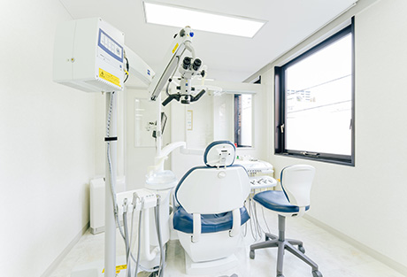
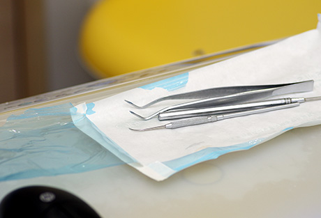
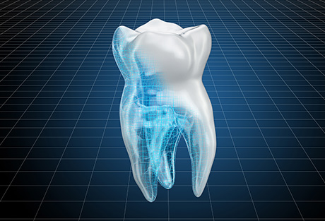
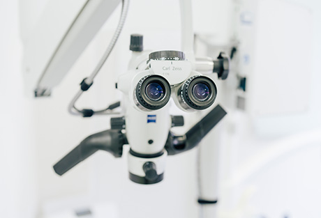
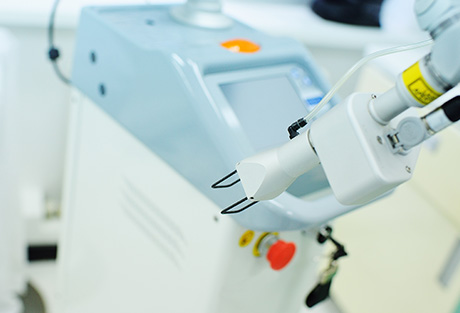
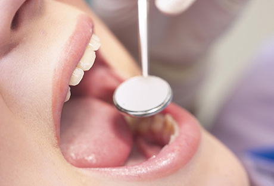

高度な環境で、一人ひとりに適した精密な治療をご提供します
町田市の歯医者「ワイズデンタルオフィス」では、患者様に末永くお口の健康を維持していただくために、一人ひとりに適した治療計画をご提案しています。また安全かつ高度な治療環境の整備も怠りません。こちらでは、当院のコンセプトや特長、診療メニューについてご紹介します。

ワイズデンタルオフィスのコンセプト
「長持ちさせる」ことを前提とした歯科診療を
「むし歯になったら治療する」「再発したら再治療する」。これまでの歯科診療では、こういったことがくり返されてきました。その結果、多くの方が歯を失ってしまったのです。
ワイズデンタルオフィスではこの形を根本的に見直し、「長持ちさせる」ことを前提とした診療をご提供しています。治療後のお口のよい状態を長持ちさせる、そして天然歯を長持ちさせる――。その実現のために、今現れている症状を診るだけに留まらない包括的な診療に取り組んでいます。
また常に研鑽を怠らず高度な技術を習得することはもちろん、それを活かす先端設備の導入にも力を入れています。「機能性」「審美性」「清掃性」「構造性」「生物的」といったあらゆる視点を元にしたメインテナンスと永続性をふまえた診療によって、患者様のお口の健康を末永くお守りできるように。スタッフ一同努めてまいります。
長持ちすることを基準としたコンセプト
- 機能性Function
- 審美性Esthetic
- 清掃性Cleansability
- 構造性Structure
- 生物的Biology
- メインテナンス性Maintainobility
- 永続性Longevity
ワイズデンタルオフィスの特長について
特長01 治療計画を大切にし、再発防止を考慮した治療を行います
当院では患者様のご希望などをふまえた上で、一人ひとりに合った治療プランをご提案しています。患者様にはわかりやすく丁寧なご説明を欠かさず、ご納得いただいてから治療を開始します。
またせっかく時間をかけて治療をしても、その後再発してしまうと、さらに歯や歯ぐきにダメージを与えてしまうことになります。治療後も定期的なメインテナンスを実施し、再発を予防していくことが大切です。
そこで当院では、「永続性：治療後の健康な状態を長く維持できる」を手に入れるため、「清掃性：患者様ご自身がケアしやすい（セルフケア）」をふまえた治療を行っています。さらには患者様ご自身でのケアに加え、「歯科医院での専門的なケア（プロケア）」も欠かせません。これらを併せ、再発防止までを考慮した治療を行っています。
- [清掃性]
日々のブラッシングなどのセルフケア・生活習慣 - 歯科医院でのしっかりとしたメインテナンス
（プロケア） - [永続性]
治療後の健康な状態を維持
特長02 先端機器を用いた精密な治療・徹底した滅菌

患者様に安全かつ高度な治療をご提供するには、それを可能にする環境が不可欠です。そこで当院では、積極的に先端設備を導入しています。
例えば、精密な治療を行うためにマイクロスコープ（歯科用顕微鏡）や歯科用CTを活用しています。またクリーンな治療環境の整備にも力を入れています。治療器具は滅菌器を用いて衛生管理を徹底し、滅菌パックで包装した状態で、次の治療前まで清潔に保管します。
さらに手袋やコップなどは使い捨てにし、ほかの患者様の治療に使い回しません。治療中にお口の外に飛び散る目に見えない細かな粉塵は、口腔外バキュームで除去するなどして、清潔な環境を維持しています。
特長03 高精度な技工物を、院内技工でスピーディーにご提供

当院では、従来外部の歯科技工所に依頼していたセラミック製の詰め物・被せ物を、院内でスピーディーに製作できる「セレックシステム」を導入しています。これは3Dカメラでスキャンしたデータをもとに、コンピュータで技工物を設計・製作するシステムです。
外注にかかる時間ロスがなく、精密な詰め物・被せ物をスピーディーにご提供できるため、治療時間を短縮できます。技工は院長が行いますので、患者様の細かなご要望もダイレクトに反映させられます。
従来歯型採取の際に生じていた患者様のご負担もなくせる上に、納得していただける質の高いセラミック治療を実現します。
精密な治療を可能にするために
歯科治療では、いかに精密な処置が行えるかがその後のお口の状態に大きく関わってきます。当院では、患者様に治療後のよい状態を維持していただくため、精密な治療に取り組んでいます。どうぞ安心してお任せください。
マイクロスコープ（歯科用顕微鏡）を使用した治療
- 
-
従来歯科治療は、基本的に目視によって行われてきました。そのため治療の精度は、担当する歯科医師の経験や勘に左右される部分も大きかったといえるでしょう。
当院では肉眼では見えない部分まできちんと確認できるよう、マイクロスコープ（歯科用顕微鏡）を導入しています。患部を拡大し、細かな部分までしっかりと確認しながら、より精密な治療を実現します。
患者様の口腔内データを一括管理
-
各種検査によって得た患者様の口腔内データを一括管理し、一人ひとりに合った正確な治療を実現します。
現在問題が生じている部分だけでなく、複数のデータからお口全体をふまえて診断することで、より適切な治療計画の立案が可能になります。対症療法的な治療ではなく包括的な治療を行えば、お口の健康を長期的に維持できます。
歯科用CTを用いた、より正確な治療シミュレーション
レーザー治療器で患者様の治療の不快感を軽減
- 
-
歯医者では、必要に応じて歯を削ったり、歯ぐきを切開したりします。そういったことに対して恐怖心をお持ちの方も少なくありません。
そこで当院では、CO2レーザー治療器を導入。CO2レーザー治療器を使用すると、歯ぐきの炎症の抑制や、傷口の殺菌・治癒促進、痛みの軽減といった効果を得られ、痛みの少ない治療が可能になります。患者様の治療時のご負担を軽減できる機器です。
患者様の咬み合わせを、咬合器で正確に診断
- 
-
当院では、歯型の石膏模型を使って患者様の咬み合わせを正確に診断し、データを取得しています。そのデータに基づき、理想的な咬み合わせの位置を見定めて治療計画を立案し、きれいな歯並びに導きます。
正しい咬み合わせになるには長期的な治療が必要です。理想的な口元を目指して、私たちと一緒に治療に取り組んでいきましょう。